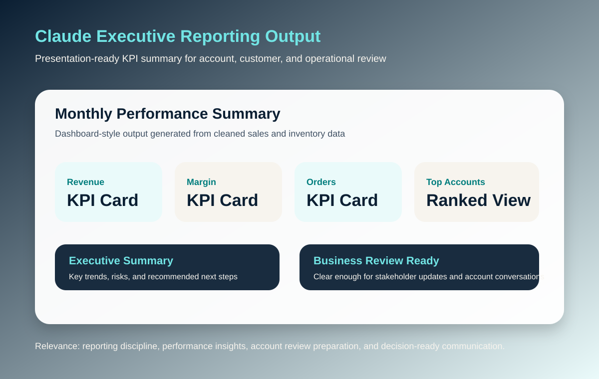

Customer and account conversation quality judgment
Experience designing structured workflows, customer-facing guidance, escalation instructions, and clear handoff logic for processes that involve users, teams, and business data.
Account management • Customer success • Implementation • AI-enabled operations
I’m Faaria Jessani, an enterprise technology consultant and client relationship professional with 8+ years of experience partnering with enterprise organizations to deliver technology solutions, build trusted stakeholder relationships, and support successful business outcomes. I have served as a primary point of contact for executive and cross-functional stakeholders across onboarding, implementation, adoption, business reviews, reporting, training, and ongoing operational improvement. My background spans enterprise consulting, digital transformation, SaaS implementations, CRM platforms, AI-enabled workflow automation, executive reporting, customer training, and strategic stakeholder engagement across aviation, higher education, financial services, and technology sectors.
Target roles: Account Management / Customer Success / Implementation / Customer Operations
Experience designing structured workflows, customer-facing guidance, escalation instructions, and clear handoff logic for processes that involve users, teams, and business data.
Project management and implementation background across stakeholder-heavy environments, with emphasis on onboarding, SOPs, validation, documentation, adoption, account handoffs, and risk management.
Built repeatable reporting workflows that clean, merge, summarize, and visualize operating data into dashboards and executive summaries for account updates, customer conversations, and decision-making.
Designed workflows with search grounding, confirmation before risky operations, unique identifiers for record changes, and clear limits so automation supports reliable customer and operational processes.
Role alignment
Role alignment
A broad view of the transferable strengths I bring to account management, customer success, implementation, project coordination, and operations-focused roles.
Selected AI projects
These are based on the files and workflow documentation in your AI Agent Course, Claude cowork project, and AI automation engagement materials.
Developed a business-first AI workflow automation engagement focused on reducing manual admin work, mapping repetitive processes, selecting practical AI use cases, and supporting adoption through documentation and training.
Created a repeatable Claude-assisted pipeline that ingests monthly sales and inventory CSVs, cleans identifiers, merges datasets, validates row matching, summarizes KPIs, and produces a browser dashboard plus PowerPoint executive report.
Built a two-workflow n8n system: a user-facing AI Agent with memory and MCP Client, plus an MCP Server workflow that performs Google Sheets create, read, update, and delete actions.
Designed a multi-agent decision support workflow where an orchestrator routes a question through specialized Problem, Options, Risks, and Recommendation agents, each grounded by Gemini Search and merged into a Google Doc.
Built an orchestrated workflow that routes stock questions to Fundamental and Technical Analysis agents, requires both agents to use search, then combines results into a structured final view.
Completed and documented multiple foundational AI agent patterns: Gmail sending, Google Sheets operations, Google Docs management, Calendar actions, Gemini Search, Calculator, Date/Time, triggers, data transformation, and flow control.
Screenshots and workflow canvases
Available project visuals plus recreated workflow-canvas diagrams based on the n8n and Claude project files.



Implementation lens
For Account Management, Customer Success, Client Implementation, and Customer Operations roles, I review workflows through a practical lens that blends account health, client relationship quality, customer experience, performance reporting, process clarity, stakeholder readiness, adoption risk, and measurable business outcomes.
Is the customer/account need, workflow context, urgency, relationship history, and desired outcome clearly understood before recommending a solution?
Does the solution align with current process, business rules, platform constraints, account context, user needs, commercial priorities, and implementation constraints?
Does the workflow move the customer, account, or internal team toward a clear next step with lower effort and less ambiguity?
Are ownership, handoffs, dependencies, and escalation paths clear enough for teams to act quickly?
Watch for unclear ownership, missing documentation, inconsistent processes, data gaps, low adoption readiness, or unsupported automation decisions.
Turn findings into trends, business review insights, documentation updates, training needs, workflow improvements, dashboards, and operational recommendations.
Professional foundation
My strongest angle is not “AI hype.” It is translating business problems into clear workflows, implementation plans, documentation, and practical AI-supported systems that non-technical teams can actually adopt.
Contact Faaria
Send a short note. I’ll respond directly.